★ BỘ GIÁO TRÌNH TRIẾT HỌC MÁC – LÊNIN • CHƯƠNG 2: CHỦ NGHĨA DUY VẬT BIỆN CHỨNG
LÝ LUẬN NHẬN THỨC
★
★Bản chất • Thực tiễn • Con đường biện chứng • Chân lý★
HỌC PHẦN: TRIẾT HỌC MÁC – LÊNIN (3 TÍN CHỈ)
Chương 2: Chủ nghĩa duy vật biện chứng
Phần III: Lý luận nhận thức (Trang 231 – 256)
Thời lượng trình bày: 45 – 50 phút (Bao gồm 2 Trò chơi tương tác)
“TỪ TRỰC QUAN SINH ĐỘNG ĐẾN TƯ DUY TRỪU TƯỢNG, VÀ TỪ TƯ DUY TRỪU TƯỢNG ĐẾN THỰC TIỄN” — V.I. LÊNIN
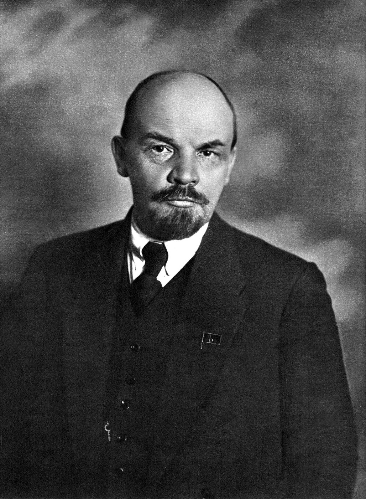
V.I. LÊNIN (1870 – 1924)
★ LỘ TRÌNH BÀI GIẢNG 45-50 PHÚT
NỘI DUNG CHƯƠNG TRÌNH
★
★5 Trụ cột tri thức & 2 Hoạt động tương tác★
PHẦN 01
Bản chất của nhận thức
Khái niệm, các quan điểm trong lịch sử triết học và 3 nguyên tắc duy vật biện chứng của V.I. Lênin.
PHẦN 02
Thực tiễn & Vai trò thực tiễn
Phạm trù Practica, 3 đặc trưng, 3 hình thức cơ bản và 4 vai trò quyết định đối với nhận thức.
GIỮA GIỜ
Trò chơi 1: Thực tiễn hay Lý thuyết?
Thử thách 5 tình huống phân biệt hoạt động thực tiễn với tư duy trừu tượng thuần túy.
PHẦN 03
Các giai đoạn nhận thức
Con đường biện chứng: Nhận thức cảm tính ⇄ Nhận thức lý tính ⇄ Thực tiễn.
PHẦN 04 & 05
Chân lý & Kỷ nguyên AI
Tính khách quan, tương đối, tuyệt đối, cụ thể và vận dụng vào kỷ nguyên Trí tuệ nhân tạo.
CUỐI GIỜ
Trò chơi 2 & Tổng kết sơ đồ
Giải mã hành trình nhận thức, tổng kết Mindmap toàn diện và giải đáp câu hỏi ôn tập.
★ MỤC TIÊU VÀ ĐỊNH HƯỚNG PHÁT TRIỂN NĂNG LỰC
CHUẨN ĐẦU RA BÀI HỌC
★
★Tri thức cốt lõi • Kỹ năng tư duy • Vận dụng thực tế★
✦
TRI THỨC CỐT LÕI
Hiểu sâu sắc bản chất nhận thức là sự phản ánh tích cực, chủ động, sáng tạo.
Nắm vững 3 đặc trưng, 3 hình thức và 4 vai trò của thực tiễn.
Nắm trọn vẹn quy luật vận động từ nhận thức cảm tính đến lý tính và quay về thực tiễn.
Nắm rõ 3 tính chất của chân lý: khách quan, tương đối & tuyệt đối, cụ thể.
★
KỸ NĂNG TƯ DUY
Xây dựng tư duy biện chứng: nhìn sự vật trong sự vận động, không phiến diện, máy móc.
Kết hợp nhuần nhuyễn phương pháp suy lý: Quy nạp và Diễn dịch trong học tập.
Phát triển năng lực tư duy phản biện (Critical Thinking) trước luồng thông tin đa chiều.
✔
NĂNG LỰC VẬN DỤNG
Quán triệt nguyên tắc thực tiễn: lấy hành động, thí nghiệm, thực hành làm thước đo.
Sử dụng công nghệ và Trí tuệ nhân tạo (AI) có trách nhiệm, luôn kiểm chứng thực tế.
Chống hai khuynh hướng sai lầm: Bệnh giáo điều và Bệnh kinh nghiệm chủ nghĩa.
★ KHỞI ĐỘNG TƯ DUY KHOA HỌC
CÂU HỎI LỚN CỦA NHẬN THỨC LUẬN
★
★Con người có thể nhận thức được bản chất thế giới không?★
NGHỊCH LÝ GIỮA “HIỆN TƯỢNG BỀ NGOÀI” VÀ “BẢN CHẤT BÊN TRONG”
Ảo ảnh của trực quan: Mắt thường thấy Mặt Trời chuyển động quanh Trái Đất, cái que cắm vào nước trông như bị gãy. Cảm giác có phản ánh hoàn toàn đúng sự thật?
Sự bất đồng nhận thức: Vì sao cùng chứng kiến một biến cố lịch sử hay hiện tượng xã hội, mỗi học phái, giai cấp lại có quan điểm và kết luận trái ngược nhau?
Tiêu chuẩn phân xử: Khi các lập luận lý thuyết đều tỏ ra chặt chẽ, cái gì là thước đo tối cao để phân định đúng - sai, chân lý hay ngụy biện?
“NẾU HÌNH THỨC BIỂU HIỆN VÀ BẢN CHẤT CỦA SỰ VẬT LÀ HOÀN TOÀN NHẤT TRÍ VỚI NHAU, THÌ MỌI KHOA HỌC SẼ TRỞ NÊN THỪA.” — C. MÁC
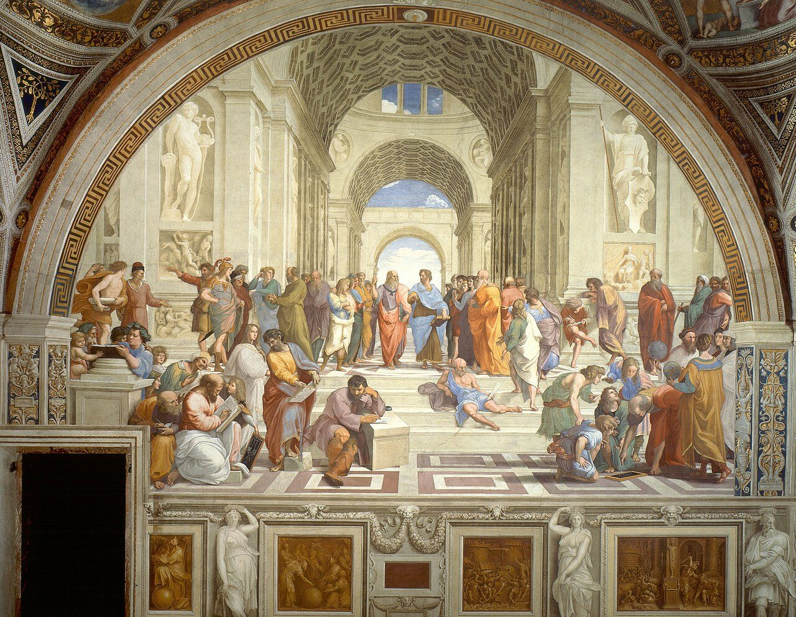
Bức họa “Trường Athena” (Raphael) — Cuộc tranh luận ngàn năm về nguồn gốc nhận thức
★ MỐI LIÊN HỆ TRONG HỆ THỐNG TRIẾT HỌC
VỊ TRÍ CỦA LÝ LUẬN NHẬN THỨC
★
★Giải quyết mặt thứ hai của vấn đề cơ bản của triết học★
TÒA LÂU ĐÀI CHỦ NGHĨA DUY VẬT BIỆN CHỨNG
1. Vật chất và Ý thức: Khẳng định thế giới vật chất tồn tại khách quan, ý thức là sự phản ánh sáng tạo thế giới vật chất.
2. Phép biện chứng duy vật: 2 nguyên lý (Mối liên hệ phổ biến, Sự phát triển), 3 quy luật cơ bản, 6 cặp phạm trù.
3. Lý luận nhận thức duy vật biện chứng (Trọng tâm): Vận dụng toàn bộ phép biện chứng vào quá trình nhận thức chân lý của con người.
Ý NGHĨA BẢN LỀ CỦA PHẦN III
Lý luận nhận thức không đứng tách rời, mà là sự thống nhất giữa thế giới quan duy vật và phương pháp luận biện chứng.
Nó là cầu nối trực tiếp để chuẩn bị nghiên cứu sang Chương 3: Chủ nghĩa duy vật lịch sử (hình thái kinh tế - xã hội, giai cấp, nhà nước, tồn tại xã hội và ý thức xã hội).
THỐNG NHẤT HỮU CƠ: PHÉP BIỆN CHỨNG = LÝ LUẬN NHẬN THỨC = LOGIC HỌC
★ PHẦN I: BẢN CHẤT CỦA NHẬN THỨC
KHÁI NIỆM LÝ LUẬN NHẬN THỨC
★
★Từ nguyên Hy Lạp: “Gnosis” (Tri thức) + “Logos” (Học thuyết)★
ĐỊNH NGHĨA KHOA HỌC TRONG GIÁO TRÌNH (TRANG 231)
Lý luận nhận thức (Gnoseology / Epistemology): Là học thuyết triết học nghiên cứu về bản chất của nhận thức, các hình thức, giai đoạn và quy luật vận động của quá trình con người phản ánh hiện thực khách quan.
Đối tượng nghiên cứu: Khả năng nhận thức của con người; mối quan hệ giữa tri thức với hiện thực khách quan; con đường đạt tới chân lý và tiêu chuẩn kiểm tra chân lý.
Khía cạnh bản thể luận & nhận thức luận: Khi triết học ra đời với tư cách là hệ thống tri thức lý luận, vấn đề nhận thức luận luôn là tâm điểm tranh luận giữa các trường phái.
LÝ LUẬN NHẬN THỨC GIẢI QUYẾT TRIỆT ĐỂ MẶT THỨ HAI CỦA VẤN ĐỀ CƠ BẢN CỦA TRIẾT HỌC
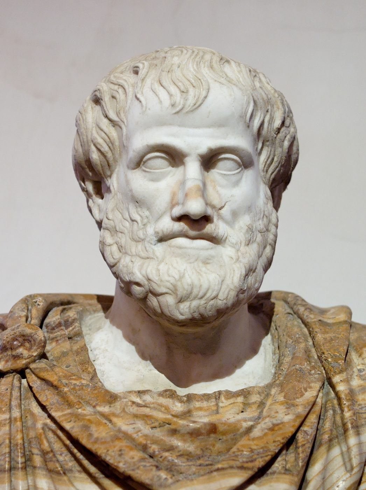
Tượng bán thân Aristotle (384 – 322 TCN) — Cội nguồn logic học và nhận thức luận cổ đại
★ LỊCH SỬ NHẬN THỨC LUẬN (TRANG 232 – 233)
QUAN ĐIỂM CỦA CHỦ NGHĨA DUY TÂM
★
★Phủ nhận nguồn gốc hiện thực khách quan của nhận thức★
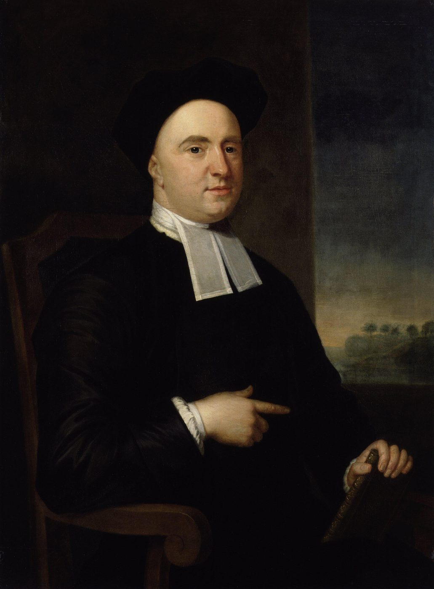
DUY TÂM CHỦ QUAN
Đại biểu: George Berkeley (1685 – 1753)
Khẳng định: Mọi sự vật hiện tượng chỉ là “phức hợp của những cảm giác” chủ quan của con người.
Luận điểm nổi tiếng: “Tồn tại tức là được tri giác” (Esse est percipi).
Hậu quả: Rơi vào thuyết duy ngã (Solipsism) — chỉ có bản thân cái ‘tôi’ và cảm giác của ‘tôi’ là tồn tại thực sự.
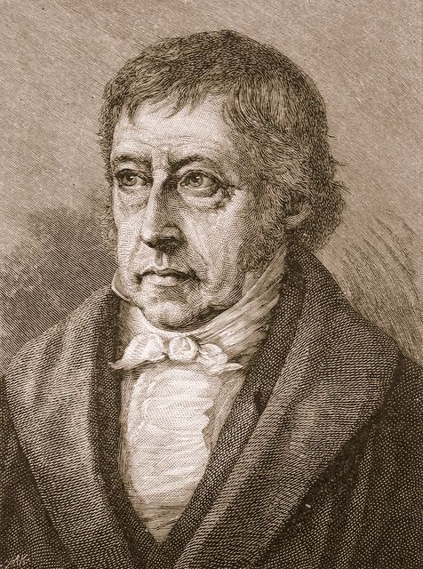
DUY TÂM KHÁCH QUAN
Đại biểu: Platon (427 – 347 TCN), G.W.F. Hegel
Platon: Nhận thức thực chất chỉ là quá trình “hồi tưởng lại” (anamnesis) của linh hồn bất tử về thế giới ý niệm kiếp trước.
Hegel: Nhận thức là quá trình “Ý niệm tuyệt đối” tự vận động, tự tha hóa vào giới tự nhiên rồi tự nhận thức lại chính bản thân mình.
Hạn chế: Thần bí hóa quá trình nhận thức của con người xã hội.
★ LỊCH SỬ NHẬN THỨC LUẬN (TRANG 233 – 234)
HOÀI NGHI LUẬN VÀ BẤT KHẢ TRI LUẬN
★
★Nghi ngờ khả năng nhận thức & Luận điểm “Vật tự nó” của I. Kant★
GIỚI HẠN NHẬN THỨC THEO QUAN ĐIỂM CỦA I. KANT (1724 – 1804)
Thuyết hoài nghi (Hume): Nghi ngờ độ xác thực của tri thức giác quan, cho rằng không có gì chứng minh thế giới bên ngoài tương ứng với cảm giác của ta.
Thuyết không thể biết (Agnosticism của Kant): Thừa nhận có thế giới khách quan bên ngoài tác động vào giác quan, nhưng con người chỉ nhận thức được ‘Hiện tượng’ bề ngoài.
Bản chất sự vật là “Vật tự nó” (Ding an sich): Nằm ngoài khả năng nắm bắt của trí tuệ con người, là bức tường vĩnh viễn không thể vượt qua.
ĂNGGHEN BÁC BỎ: “NẾU CHÚNG TA CÓ THỂ CHỨNG MINH TÍNH CHÍNH XÁC CỦA SỰ HIỂU BIẾT... BẰNG CÁCH TỰ MÌNH LÀM RA SỰ VẬT ĐÓ THÌ ‘VẬT TỰ NÓ’ KHÔNG CÒN NỮA!”
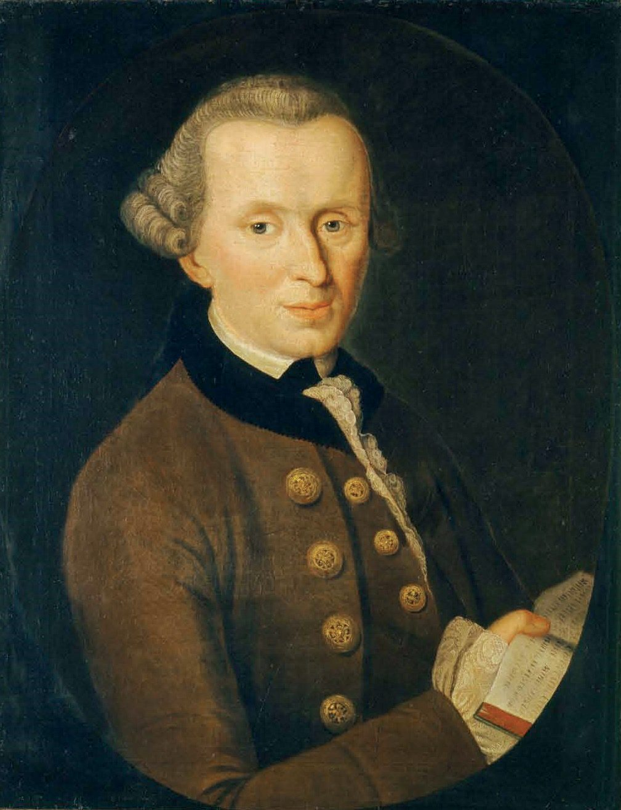
Immanuel Kant (1724 – 1804) — Người đề xướng thuyết “Vật tự nó” (Ding an sich)
★ LỊCH SỬ NHẬN THỨC LUẬN (TRANG 234 – 235)
CHỦ NGHĨA DUY VẬT TRƯỚC C. MÁC
★
★Khẳng định khả năng nhận thức nhưng mang tính trực quan, siêu hình★
ƯU ĐIỂM VÀ HAI HẠN CHẾ CƠ BẢN (TRANG 234)
Mặt tích cực: Dũng cảm công nhận con người có khả năng nhận thức thế giới; xem nhận thức là sự phản ánh của hiện thực khách quan vào bộ óc con người.
Hạn chế 1 (Tính chất trực quan, máy móc): Coi phản ánh nhận thức chỉ như “tấm gương soi” hay “miếng sáp in dấu”, thụ động, một chiều, không thấy sự biến đổi phức tạp.
Hạn chế 2 (Tính chất siêu hình, phi lịch sử): Không hiểu được nhận thức là quá trình biện chứng vận động có mâu thuẫn; đặc biệt là hoàn toàn không thấy vai trò của hoạt động thực tiễn.
KHÔNG ĐƯA THỰC TIỄN VÀO LÝ LUẬN NHẬN THỨC CHÍNH LÀ NGUYÊN NHÂN KHIẾN DUY VẬT CŨ RƠI VÀO BẾ TẮC
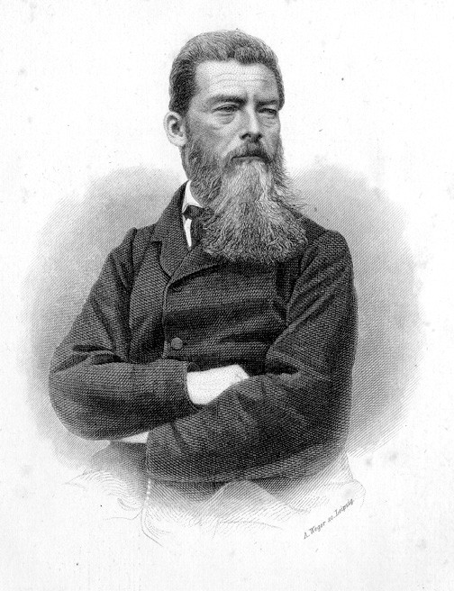
Ludwig Feuerbach (1804 – 1872) — Đỉnh cao của chủ nghĩa duy vật siêu hình trước C. Mác
★ BỘ GIÁO TRÌNH TRIẾT HỌC MÁC – LÊNIN (TRANG 235 – 236)
BA NGUYÊN TẮC NHẬN THỨC DUY VẬT BIỆN CHỨNG
★
★Cương lĩnh nhận thức luận của V.I. Lênin (Năm 1909)★
NGUYÊN TẮC 1: THỪA NHẬN THẾ GIỚI KHÁCH QUAN TỒN TẠI ĐỘC LẬP VỚI Ý THỨC
Thừa nhận những sự vật, hiện tượng tồn tại khách quan bên ngoài và độc lập với ý thức, cảm giác của con người. Đó là nguồn gốc duy nhất của mọi nhận thức.
NGUYÊN TẮC 2: CẢM GIÁC, Ý THỨC LÀ HÌNH ẢNH CỦA THẾ GIỚI KHÁCH QUAN
Ý thức là hình ảnh chủ quan của thế giới khách quan. Thế giới có thể nhận thức được, không có bức tường nào ngăn cách giữa hiện tượng và bản chất (“vật tự nó”).
NGUYÊN TẮC 3: THỰC TIỄN LÀ TIÊU CHUẨN KIỂM TRA CHÂN LÝ
Thực tiễn là tiêu chuẩn duy nhất để kiểm tra tính đúng đắn của nhận thức, phân biệt hình ảnh phản ánh đúng (chân lý) với ảo tưởng, sai lầm.
V.I. Lênin — Tác giả “Chủ nghĩa duy vật và chủ nghĩa kinh nghiệm phê phán”
★ BẢN CHẤT NHẬN THỨC (TRANG 236 – 238)
BẢN CHẤT CỦA NHẬN THỨC
★
★Sự phản ánh tích cực, chủ động, sáng tạo hiện thực khách quan★
BỐN ĐẶC TRƯNG BẢN CHẤT THEO TRIẾT HỌC MÁC – LÊNIN
Thừa nhận khách thể khách quan: Thế giới vật chất tồn tại độc lập với ý thức con người và là nguồn gốc duy nhất của nhận thức.
Tính tích cực và chủ động: Nhận thức không phải là sự sao chép thụ động mà con người chủ động hướng tới đối tượng theo nhu cầu của mình.
Tính sáng tạo phi thường: Con người có khả năng trừu tượng hóa, mô hình hóa, tái tạo lại bản chất và dự báo tương lai của sự vật.
Dựa trên nền tảng thực tiễn: Nhận thức nảy sinh từ thực tiễn và lấy thực tiễn làm thước đo kiểm chứng cuối cùng.
NHẬN THỨC LÀ QUÁ TRÌNH BIỆN CHỨNG ĐI TỪ CHƯA BIẾT ĐẾN BIẾT, TỪ BIẾT NÔNG ĐẾN BIẾT SÂU, TỪ HIỆN TƯỢNG ĐẾN BẢN CHẤT
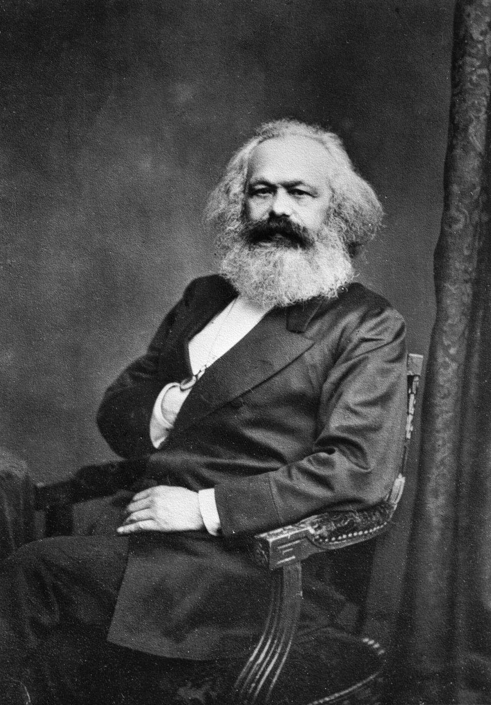
Karl Marx (1818 – 1883) — Người đặt nền móng duy vật biện chứng cho nhận thức luận
★ PHÂN LOẠI NHẬN THỨC (TRANG 238 – 239)
CÁC HÌNH THỨC VÀ CẤP ĐỘ NHẬN THỨC
★
★Kinh nghiệm vs. Lý luận • Thông thường vs. Khoa học★
THEO TÍNH CHẤT PHẢN ÁNH
1. Nhận thức kinh nghiệm:
Hình thành từ sự quan sát trực tiếp các sự vật hiện tượng trong đời sống hàng ngày hoặc thực nghiệm. Đem lại tri thức cụ thể, sinh động nhưng còn bề ngoài và rời rạc.
2. Nhận thức lý luận:
Nhận thức gián tiếp, khái quát về bản chất và quy luật của sự vật dưới dạng hệ thống các khái niệm, quy luật, phạm trù khoa học.
THEO MỨC ĐỘ TỰ GIÁC & TỔ CHỨC
1. Nhận thức thông thường (tiền khoa học):
Hình thành tự phát, trực tiếp qua hoạt động sống hàng ngày. Chi phối phần lớn hành vi ứng xử thường nhật của con người nhưng chưa thành hệ thống chặt chẽ.
2. Nhận thức khoa học:
Hình thành tự giác, có phương pháp luận, sử dụng công cụ thực nghiệm chuyên sâu để vạch ra các quy luật khách quan chi phối tự nhiên và xã hội.
★ PHẦN II: THỰC TIỄN VÀ VAI TRÒ CỦA THỰC TIỄN
PHẠM TRÙ THỰC TIỄN (PRACTICA)
★
★Phát kiến mang tính cách mạng của C. Mác và Ph. Ăngghen★
“Thực tiễn là toàn bộ những hoạt động vật chất - cảm tính, có tính mục đích, mang tính lịch sử - xã hội của con người nhằm cải tạo tự nhiên và xã hội.”
— Bộ Giáo trình Triết học Mác – Lênin, Trang 241
Gốc từ ngữ: Xuất phát từ tiếng Hy Lạp cổ “Practica” (hoạt động tích cực, biến đổi hiện thực).
Hoạt động vật chất - cảm tính: Là hoạt động mà con người phải sử dụng sức mạnh thể xác, giác quan và công cụ vật chất để tác động vào đối tượng vật chất cụ thể.
Mục đích tối thượng: Không phải để chiêm nghiệm thế giới trong đầu mà nhằm cải tạo thế giới, phục vụ lợi ích sinh tồn và phát triển của con người.
THỰC TIỄN LÀ CẦU NỐI VẬT CHẤT TRỰC TIẾP GIỮA CON NGƯỜI VỚI THẾ GIỚI TỰ NHIÊN VÀ XÃ HỘI
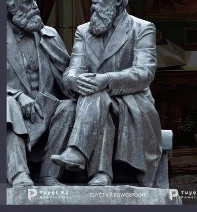
Tượng đài Karl Marx & Friedrich Engels — Hai nhà sáng lập chủ nghĩa duy vật lịch sử
★ BẢN CHẤT HOẠT ĐỘNG THỰC TIỄN (TRANG 241 – 242)
BA ĐẶC TRƯNG CƠ BẢN CỦA THỰC TIỄN
★
★Phân biệt thực tiễn với tư duy trừu tượng và bản năng loài vật★
①
HOẠT ĐỘNG VẬT CHẤT – CẢM TÍNH
Thực tiễn không phải là hoạt động tinh thần, tư tưởng. Con người sử dụng công cụ vật chất, giác quan và cơ bắp tác động vào đối tượng vật chất cụ thể bên ngoài để biến đổi chúng.
②
MANG TÍNH LỊCH SỬ – XÃ HỘI
Thực tiễn là hoạt động của con người trong các quan hệ xã hội, không phải hành vi sinh học cô lập kiểu Robinson trên đảo hoang. Trình độ thực tiễn bị quy định bởi từng giai đoạn lịch sử cụ thể.
③
CÓ TÍNH MỤC ĐÍCH TỰ GIÁC
Khác hoàn toàn với hoạt động bản năng của loài vật (ong xây tổ, chim làm tổ), hoạt động thực tiễn của con người luôn có ý thức, có kế hoạch, hướng tới mục tiêu cải tạo thế giới để thỏa mãn nhu cầu.
★ CẤU TRÚC HỆ THỐNG THỰC TIỄN (TRANG 242)
CẤU TRÚC CỦA HOẠT ĐỘNG THỰC TIỄN
★
★Mục đích → Phương tiện (Công cụ) → Kết quả thực tiễn★
1
MỤC ĐÍCH
Nảy sinh từ nhu cầu vật chất và tinh thần của con người. Mục đích định hướng toàn bộ hành động, là hình mẫu lý tưởng về sản phẩm tương lai.
➔
2
PHƯƠNG TIỆN (CÔNG CỤ)
Hệ thống công cụ lao động, máy móc, phương pháp kỹ thuật được chủ thể lựa chọn để tác động vào đối tượng hiện thực.
➔
3
KẾT QUẢ
Sản phẩm vật chất hoặc sự biến đổi trong hiện thực. Kết quả này được đối chiếu với mục đích ban đầu để kiểm nghiệm và rút kinh nghiệm.
“CÁI PHÂN BIỆT CÁC THỜI ĐẠI KINH TẾ KHÔNG PHẢI LÀ Ở CHỖ CHÚNG SẢN XUẤT RA CÁI GÌ, MÀ LÀ Ở CHỖ CHÚNG SẢN XUẤT BẰNG CÁCH NÀO, VỚI NHỮNG TƯ LIỆU LAO ĐỘNG NÀO.” — C. MÁC
LƯU Ý QUAN TRỌNG:
Nếu chỉ có mục đích trong đầu mà không dùng phương tiện vật chất tác động vào khách thể thì chưa cấu thành hoạt động thực tiễn.
Đó chỉ là ước mơ, giả thuyết hoặc tư duy trừu tượng thuần túy.
★ BA HÌNH THỨC THỰC TIỄN (TRANG 243 – 244)
BA HÌNH THỨC CƠ BẢN CỦA THỰC TIỄN
★
★Sản xuất vật chất • Chính trị – Xã hội • Thực nghiệm khoa học★
SẢN XUẤT VẬT CHẤT
HÌNH THỨC SỚM NHẤT & CƠ BẢN NHẤT
Con người sử dụng tư liệu lao động tác động vào giới tự nhiên để tạo ra của cải vật chất duy trì sự sinh tồn của loài người. Là nền tảng cho mọi hoạt động khác.
HOẠT ĐỘNG CHÍNH TRỊ – XÃ HỘI
CẢI BIẾN CÁC QUAN HỆ XÃ HỘI
Hoạt động của các giai cấp, đảng phái, cộng đồng nhằm biến đổi quan hệ chính trị, chế độ xã hội, giải phóng con người và thúc đẩy tiến bộ văn minh.
THỰC NGHIỆM KHOA HỌC
HÌNH THỨC THỰC TIỄN ĐẶC BIỆT
Hoạt động được tiến hành trong môi trường nhân tạo, có sự kiểm soát nghiêm ngặt nhằm rút ngắn thời gian nghiên cứu và trực tiếp phục vụ sản xuất.
★ QUAN HỆ BIỆN CHỨNG (TRANG 244)
MỐI QUAN HỆ BIỆN CHỨNG GIỮA 3 HÌNH THỨC
★
★Sản xuất vật chất là nền tảng • Thực nghiệm khoa học là đòn bẩy★
Sản xuất vật chất giữ vai trò quyết định nhất: Là cơ sở nuôi sống con người, cung cấp cơ sở vật chất, kinh phí và trang thiết bị cho hoạt động chính trị và thực nghiệm khoa học.
Hoạt động chính trị – xã hội tạo môi trường thể chế: Khi thể chế tiến bộ, giải phóng quan hệ sản xuất sẽ mở đường cho sản xuất phát triển và khoa học nở rộ.
Thực nghiệm khoa học ngày càng giữ vai trò tiên phong: Trong cách mạng công nghiệp 4.0, ‘tri thức trở thành lực lượng sản xuất trực tiếp’, thực nghiệm khoa học đi trước mở đường cho sản xuất.
KHÔNG COI THƯỜNG BẤT KỲ HÌNH THỨC NÀO, NHƯNG LUÔN KHẲNG ĐỊNH SẢN XUẤT VẬT CHẤT LÀ GỐC RỄ
Sức mạnh của hoạt động thực tiễn cải tạo lịch sử và tự nhiên
★ VAI TRÒ CỦA THỰC TIỄN (TRANG 244 – 245)
THỰC TIỄN LÀ CƠ SỞ VÀ ĐỘNG LỰC CỦA NHẬN THỨC
★
★Điểm xuất phát, nguồn gốc và sức mạnh thúc đẩy nhận thức tiến bộ★
Cung cấp chất liệu và dữ liệu: Thông qua thực tiễn, con người tiếp xúc trực tiếp với thế giới, làm cho các thuộc tính, quy luật của sự vật bộc lộ để giác quan nắm bắt.
Đề ra nhu cầu, nhiệm vụ nghiên cứu: Mọi ngành khoa học (Toán, Lý, Y sinh, AI) đều ra đời từ mệnh lệnh giải quyết các bài toán hóc búa của thực tế.
Rèn luyện và hoàn thiện giác quan: Lao động thực tiễn làm cho các giác quan của con người trở nên tinh tường, nhạy bén hơn gấp nhiều lần.
Chế tạo công cụ mở rộng năng lực nhận thức: Kính hiển vi, kính thiên văn, siêu máy tính và mô hình AI đều là sản phẩm của thực tiễn nối dài giác quan con người.
“KHI XÃ HỘI CÓ MỘT NHU CẦU VỀ KỸ THUẬT THÌ NÓ THÚC ĐẨY KHOA HỌC TIẾN LÊN HƠN MƯỜI TRƯỜNG ĐẠI HỌC.” — PH. ĂNGGHEN
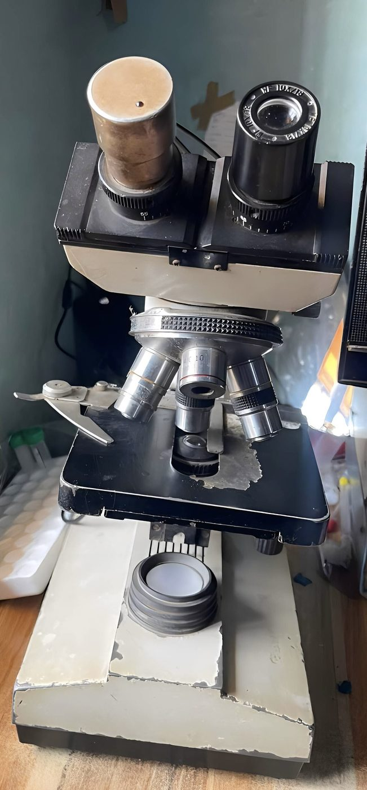
Kính hiển vi phòng thí nghiệm — Thực tiễn chế tạo công cụ nối dài thị giác con người
★ VAI TRÒ CỦA THỰC TIỄN (TRANG 245 – 246)
THỰC TIỄN LÀ MỤC ĐÍCH CỦA NHẬN THỨC
★
★Nhận thức để quay về soi đường, dẫn dắt cải tạo thế giới★
“Các nhà triết học chỉ giải thích thế giới bằng nhiều cách khác nhau, song vấn đề là cải tạo thế giới.”
— C. Mác, Luận cương về Phoi-ơ-bắc (1845)
Vì nhu cầu thực tiễn, không phải lý thuyết suông: Nhận thức của con người ngay từ đầu đã bị quy định bởi nhu cầu thực tiễn. Muốn sống, con người phải nhận thức để hành động.
Kim chỉ nam định hướng: Tri thức lý luận giúp con người vạch ra kế hoạch, dự báo khó khăn, tránh mò mẫm sai lầm và rút ngắn con đường đi tới đích.
Tiêu chí đánh giá giá trị: Một công trình khoa học dù đồ sộ đến đâu nếu không đem lại lợi ích cải tạo hiện thực xã hội thì giá trị sẽ bị hạn chế.
LÝ LUẬN MÀ KHÔNG LIÊN HỆ VỚI THỰC TIỄN LÀ LÝ LUẬN SUÔNG; THỰC TIỄN KHÔNG CÓ LÝ LUẬN SOI ĐƯỜNG LÀ THỰC TIỄN MÙ QUÁNG
BÀI HỌC CHO SINH VIÊN:
Học đại học không phải chỉ để thi cử lấy bằng cấp, mà để nắm vững tri thức mang ra giải quyết những bài toán thực tế của đất nước và doanh nghiệp.
Biến tri thức trên giảng đường thành năng lực hành động thực tiễn!
★ BỘ GIÁO TRÌNH TRIẾT HỌC MÁC – LÊNIN (TRANG 246 – 247)
THỰC TIỄN LÀ TIÊU CHUẨN DUY NHẤT CỦA CHÂN LÝ
★
★Tính Tuyệt đối và Tính Tương đối của Tiêu chuẩn Thực tiễn★
“Quan điểm về đời sống, về thực tiễn, phải là quan điểm thứ nhất và cơ bản của lý luận về nhận thức... và nó không cho phép ta biến tri thức của con người thành một cái gì ‘tuyệt đối’, tĩnh tại.”
— V.I. Lênin, Toàn tập, Tập 18, Trang 167
Chỉ có thực tiễn mới có tính phổ biến và mang tính hiện thực trực tiếp, làm chiếc cầu nối kiểm chứng tư tưởng chủ quan có phù hợp với khách thể khách quan hay không.
KHÔNG CÓ TIÊU CHUẨN NÀO NGOÀI THỰC TIỄN ĐỂ ĐO LƯỜNG CHÂN LÝ
✦ TÍNH TUYỆT ĐỐI CỦA TIÊU CHUẨN THỰC TIỄN
Thực tiễn là tiêu chuẩn khách quan duy nhất trong mọi thời đại để kiểm tra chân lý. Trong mỗi giai đoạn lịch sử xác định, thực tiễn có khả năng xác nhận tính đúng đắn của những tri thức đã đạt được.
✦ TÍNH TƯƠNG ĐỐI CỦA TIÊU CHUẨN THỰC TIỄN
Thực tiễn không đứng yên một chỗ mà luôn vận động, phát triển. Thực tiễn của ngày hôm nay chưa thể xác minh hay bác bỏ mọi vấn đề của tương lai. Nhận thức tiếp tục được bổ sung và hoàn thiện theo sự tiến triển của thực tiễn.
★ Ý NGHĨA PHƯƠNG PHÁP LUẬN (TRANG 247)
QUAN ĐIỂM THỰC TIỄN VÀ BÀI HỌC VẬN DỤNG
★
★Nguyên tắc phương pháp luận tối cao của triết học Mác – Lênin★
BA NGUYÊN TẮC HÀNH ĐỘNG CỦA QUAN ĐIỂM THỰC TIỄN
Xuất phát từ thực tiễn: Nhận thức sự vật phải bám sát nhu cầu và điều kiện hiện thực, không được xuất phát từ ý muốn chủ quan hay giáo điều sách vở.
Lấy thực tiễn làm thước đo: Coi kết quả hoạt động thực tiễn là tiêu chuẩn cao nhất để kiểm nghiệm sự đúng đắn của chủ trương, chính sách và lý thuyết.
Tăng cường tổng kết thực tiễn: Không ngừng đúc kết kinh nghiệm từ thực tiễn cuộc sống để bổ sung, sửa đổi và phát triển lý luận ngày càng hoàn thiện.
ĐẢNG TA KHẲNG ĐỊNH: “ĐỔI MỚI PHẢI XUẤT PHÁT TỪ THỰC TIỄN, TÔN TRỌNG VÀ HÀNH ĐỘNG THEO QUY LUẬT KHÁCH QUAN”
PHÊ PHÁN HAI CĂN BỆNH NGUY HIỂM:
1. Bệnh giáo điều (Dogmatism):
Chỉ bám chặt vào từng câu chữ trong sách vở, áp dụng máy móc mô hình có sẵn mà không đếm xỉa đến hoàn cảnh cụ thể.
2. Bệnh kinh nghiệm (Empiricism):
Thỏa mãn với vốn kinh nghiệm hạn hẹp của bản thân, coi thường lý luận, dẫn đến thiển cận, mò mẫm và tụt hậu.
★ HOẠT ĐỘNG TƯƠNG TÁC GIỮA GIỜ (THỜI LƯỢNG: 3-4 PHÚT)
TRÒ CHƠI: “THỰC TIỄN HAY CHỈ LÀ LÝ THUYẾT?”
★
★Thử thách 5 tình huống phân biệt hoạt động thực tiễn★
⚖️
LUẬT CHƠI DÀNH CHO CẢ LỚP
Màn hình sẽ hiển thị 5 tình huống cụ thể trong đời sống và nghiên cứu. Nhiệm vụ của các bạn là xác định xem hoạt động đó thuộc về:
A. HOẠT ĐỘNG THỰC TIỄN
B. HOẠT ĐỘNG NHẬN THỨC / TINH THẦN
Mỗi câu trả lời đúng được cộng 20 điểm. Hệ thống sẽ giải thích cặn kẽ dựa trên giáo trình.
★ MINI-GAME 1 • THỬ THÁCH NHẬN THỨC
THỰC TIỄN HAY CHỈ LÀ LÝ THUYẾT?
★
✦ TIẾN ĐỘ:Câu 1 / 5
★ TỔNG ĐIỂM:Điểm: 0 / 100
Đang tải dữ liệu tình huống...
★ PHẦN III: CÁC GIAI ĐOẠN CỦA QUÁ TRÌNH NHẬN THỨC (TRANG 248)
CON ĐƯỜNG BIỆN CHỨNG CỦA SỰ NHẬN THỨC
★
★Luận điểm bất hủ của V.I. Lênin trong “Bút ký triết học”★
“Từ trực quan sinh động đến tư duy trừu tượng, và từ tư duy trừu tượng đến thực tiễn — đó là con đường biện chứng của sự nhận thức chân lý, của sự nhận thức thực tại khách quan.”
— V.I. Lênin, Toàn tập, Tập 29, Trang 179
GIAI ĐOẠN 1: TRỰC QUAN SINH ĐỘNG
➔
GIAI ĐOẠN 2: TƯ DUY TRỪU TƯỢNG
➔
KIỂM NGHIỆM: THỰC TIỄN
★ PHẦN III: CÁC GIAI ĐOẠN NHẬN THỨC (TRANG 248)
GIAI ĐOẠN NHẬN THỨC CẢM TÍNH
★
★Trực quan sinh động • Phản ánh trực tiếp hiện tượng bên ngoài★
BẢN CHẤT VÀ ĐẶC ĐIỂM CỦA TRỰC QUAN SINH ĐỘNG
Điểm khởi đầu của nhận thức: Con người không thể có tri thức nếu không thông qua cửa ngõ của các giác quan tiếp xúc với thế giới khách quan.
Tính trực tiếp: Cảm giác chỉ nảy sinh khi sự vật hiện tượng trực tiếp tác động vào mắt, tai, mũi, lưỡi, da... của chủ thể.
Tính cụ thể, sinh động: Đem lại cho con người những hình ảnh vô cùng phong phú, màu sắc, âm thanh, hình khối chân thực của thế giới.
KHÔNG CÓ NHẬN THỨC CẢM TÍNH THÌ KHÔNG THỂ CÓ BẤT KỲ Ý THỨC VÀ NHẬN THỨC LÝ TÍNH NÀO
NĂM CỬA NGÕ GIÁC QUAN TIẾP NHẬN:
👁 Thị giác: Ánh sáng, màu sắc, hình thể, chuyển động.
👂 Thính giác: Âm thanh, tần số, giai điệu.
👃 Khứu giác: Hương thơm, mùi vị hóa học.
👅 Vị giác: Vị chua, cay, mặn, ngọt.
✋ Xúc giác: Nhiệt độ, độ cứng, độ trơn nhẵn.
★ BA NẤC THANG CẢM TÍNH (TRANG 248 – 249)
CẢM GIÁC • TRI GIÁC • BIỂU TƯỢNG
★
★Ba hình thức từ đơn giản đến phức tạp của Trực quan sinh động★
1
CẢM GIÁC (SENSATION)
HÌNH THỨC BAN ĐẦU ĐƠN GIẢN NHẤT
Nảy sinh do sự tác động trực tiếp của sự vật vào từng giác quan riêng lẻ, phản ánh từng thuộc tính riêng lẻ bề ngoài của sự vật (nhiệt độ, màu sắc, âm thanh).
2
TRI GIÁC (PERCEPTION)
HÌNH ẢNH TRỌN VẸN BỀ NGOÀI
Là sự tổng hợp của nhiều cảm giác, đem lại một hình ảnh hoàn chỉnh, trọn vẹn về sự vật trong bộ óc khi sự vật đang trực tiếp tác động vào các giác quan.
3
BIỂU TƯỢNG (REPRESENTATION)
CẦU NỐI SANG LÝ TÍNH
Hình ảnh cảm tính được lưu giữ và tái hiện trong trí nhớ khi sự vật không còn trực tiếp hiện diện trước mắt. Bắt đầu có sự chọn lọc và khái quát hóa sơ khởi.
★ GIỚI HẠN NHẬN THỨC (TRANG 249)
GIỚI HẠN CỦA NHẬN THỨC CẢM TÍNH
★
★Chưa vạch ra được bản chất, quy luật tất yếu bên trong★
Chỉ dừng lại ở bề ngoài: Cảm tính chỉ phản ánh được các thuộc tính hiện tượng, đơn nhất, bề ngoài ngẫu nhiên; chưa phân biệt được đâu là cái bản chất và không bản chất.
Dễ bị ảo giác đánh lừa: Hiện tượng khúc xạ ánh sáng làm chiếc đũa trông như bị gãy, ảo ảnh sa mạc... cho thấy trực quan có thể dẫn đến sai lầm nếu không có tư duy thẩm định.
Bị giới hạn bởi không - thời gian trực tiếp: Giác quan con người không thể nhìn xuyên qua lòng đất, không thể nhìn thấy cấu trúc nguyên tử hay quá trình lịch sử hàng triệu năm trước nếu không có tư duy lý luận.
ĐỂ NẮM BẮT ĐƯỢC QUY LUẬT VÀ BẢN CHẤT SỰ VẬT, NHẬN THỨC TẤT YẾU PHẢI TIẾN LÊN NHẬN THỨC LÝ TÍNH
THÀNH NGỮ DÂN GIAN:
“Trăm nghe không bằng một thấy,
Trăm thấy không bằng một ngẫm suy.”
Thấy bằng mắt mới chỉ là cảm giác, tri giác; phải thông qua ‘ngẫm suy’ (tư duy trừu tượng) thì mới chạm tới quy luật bản chất.
★ PHẦN III: CÁC GIAI ĐOẠN NHẬN THỨC (TRANG 249 – 250)
GIAI ĐOẠN NHẬN THỨC LÝ TÍNH
★
★Tư duy trừu tượng • Phản ánh gián tiếp, khái quát bản chất và quy luật★
BẢN CHẤT VÀ ĐẶC ĐIỂM CỦA TƯ DUY TRỪU TƯỢNG
Tính gián tiếp: Được thực hiện thông qua công cụ ngôn ngữ, các khái niệm, quy luật và phương tiện suy luận logic, không cần sự vật phải đang hiện diện trước mắt.
Tính trừu tượng và khái quát: Gạt bỏ những yếu tố ngẫu nhiên, cá biệt bề ngoài để nắm lấy những thuộc tính bản chất, phổ biến của cả một lớp sự vật.
Đi sâu vào quy luật: Có khả năng phát hiện ra mối liên hệ nhân quả, quy luật vận động nội tại và dự báo xu thế phát triển tương lai.
NHỜ CÓ NHẬN THỨC LÝ TÍNH, CON NGƯỜI MỚI THỰC SỰ LÀM CHỦ ĐƯỢC KHOA HỌC VÀ CẢI TẠO ĐƯỢC THẾ GIỚI
Thư viện cổ — Nơi lưu giữ hệ thống khái niệm, lý luận khoa học của nhân loại
★ CẤU TRÚC TƯ DUY TRỪU TƯỢNG (TRANG 250 – 251)
KHÁI NIỆM • PHÁN ĐOÁN • SUY LÝ
★
★Ba hình thức cơ bản của giai đoạn Nhận thức lý tính★
1
KHÁI NIỆM (CONCEPT)
HÌNH THỨC CƠ BẢN NHẤT CỦA TƯ DUY
Phản ánh những thuộc tính bản chất, phổ biến của một nhóm sự vật hiện tượng. Được biểu hiện bằng các từ hoặc cụm từ khoa học.
2
PHÁN ĐOÁN (JUDGEMENT)
LIÊN KẾT CÁC KHÁI NIỆM
Liên kết các khái niệm lại để khẳng định hoặc phủ định một thuộc tính nào đó của đối tượng. Gồm 3 loại: Đơn nhất, Đặc thù, Phổ biến.
3
SUY LÝ / SUY LUẬN (INFERENCE)
SẢN SINH TRI THỨC MỚI
Từ một hoặc nhiều phán đoán tiền đề đã biết, thông qua quy tắc logic để rút ra phán đoán kết luận mới (tri thức mới chưa từng biết trước đó).
★ PHƯƠNG PHÁP SUY LUẬN KHOA HỌC (TRANG 251 – 252)
QUY NẠP VÀ DIỄN DỊCH
★
★Hai phương pháp suy luận gắn bó hữu cơ trong nghiên cứu khoa học★
⬆
PHƯƠNG PHÁP QUY NẠP (INDUCTION)
TỪ CÁI RIÊNG ➔ CÁI CHUNG
Đi từ những tri thức về sự vật, hiện tượng riêng lẻ, cá biệt để khái quát rút ra tri thức mang tính quy luật chung cho toàn bộ lớp đối tượng.
Ví dụ: Quan sát thấy bệnh nhân 1, 2, 3... khỏi bệnh nhờ kháng sinh X ➔ Khái quát: Kháng sinh X đặc trị vi khuẩn này.
⬇
PHƯƠNG PHÁP DIỄN DỊCH (DEDUCTION)
TỪ CÁI CHUNG ➔ CÁI RIÊNG
Đi từ tri thức mang tính nguyên lý, quy luật chung đã được xác lập để suy ra kết luận về từng trường hợp cá biệt cụ thể.
Ví dụ: Mọi virus đều chứa vật chất di truyền ADN hoặc ARN. SARS-CoV-2 là virus ➔ SARS-CoV-2 chứa vật chất di truyền.
★ MỐI QUAN HỆ BIỆN CHỨNG (TRANG 252)
QUAN HỆ BIỆN CHỨNG CẢM TÍNH VÀ LÝ TÍNH
★
★Thống nhất hữu cơ • Phê phán Chủ nghĩa Duy cảm và Chủ nghĩa Duy lý★
Thống nhất biện chứng: Là hai giai đoạn khác nhau về chất trong cùng một quá trình nhận thức duy nhất của con người.
Cảm tính là cơ sở của lý tính: Nếu không có sự tác động trực tiếp của khách thể vào giác quan để cung cấp dữ liệu ban đầu thì tư duy trừu tượng không có chất liệu để khái quát.
Lý tính chỉ đạo và nâng tầm cảm tính: Nhờ có lý luận khoa học định hướng, con người mới biết cần quan sát cái gì, đo đạc thông số nào để tìm ra bản chất.
NHẬN THỨC CẢM TÍNH KHÔNG CÓ LÝ TÍNH THÌ MÙ QUÁNG; NHẬN THỨC LÝ TÍNH KHÔNG CÓ CẢM TÍNH THÌ RỖNG TUẾCH
✕ PHÊ PHÁN CHỦ NGHĨA DUY CẢM
Tuyệt đối hóa vai trò của cảm giác, hạ thấp tư duy trừu tượng, cho rằng chỉ có cảm giác mới đáng tin cậy. Dẫn đến phiến diện, không thấy bản chất.
✕ PHÊ PHÁN CHỦ NGHĨA DUY LÝ CỰC ĐOAN
Tuyệt đối hóa lý tính, coi thường cảm tính, cho rằng chân lý sinh ra từ tư duy thuần túy độc lập với kinh nghiệm giác quan. Dẫn đến kinh viện, xa rời thực tế.
★ MÔ HÌNH BIỆN CHỨNG (TRANG 252 – 253)
VÒNG KHÂU VÀ HÌNH XOẮN ỐC NHẬN THỨC
★
★Trực quan sinh động → Tư duy trừu tượng → Thực tiễn (Vòng xoắn ốc vô tận)★
QUY LUẬT VẬN ĐỘNG VÔ TẬN CỦA TRI THỨC NHÂN LOẠI
Một chu trình nhận thức hoàn chỉnh: Bắt đầu từ tiếp xúc thực tiễn cảm tính ➔ khái quát thành lý luận ➔ quay về chỉ đạo thực tiễn.
Vai trò kép của thực tiễn: Vừa là điểm kết thúc kiểm tra chu trình trước, vừa là điểm khởi đầu mở ra chu trình tiếp theo.
Hình xoắn ốc phát triển đi lên: Mỗi vòng nhận thức mới sâu sắc hơn, toàn diện hơn, tiệm cận gần hơn tới chân lý khách quan.
SỰ NGHIỆP NHẬN THỨC CỦA LOÀI NGƯỜI LÀ MỘT QUÁ TRÌNH PHÁT TRIỂN LỊCH SỬ KHÔNG BAO GIỜ CÓ ĐIỂM DỪNG CUỐI CÙNG
✦ HÌNH XOẮN ỐC NHẬN THỨC ✦
● 1. Cảm tính● 2. Lý tính● 3. Thực tiễn
★ PHẦN IV: LÝ LUẬN VỀ CHÂN LÝ (TRANG 253 – 254)
KHÁI NIỆM CHÂN LÝ
★
★Tri thức phù hợp với hiện thực khách quan và được thực tiễn kiểm nghiệm★
“Chân lý là tri thức phù hợp với hiện thực khách quan mà nó phản ánh và đã được thực tiễn kiểm nghiệm.”
— Bộ Giáo trình Triết học Mác – Lênin, Trang 253
Chân lý là tri thức: Tồn tại dưới dạng tư tưởng trong đầu con người, không đồng nhất chân lý với bản thân thế giới vật chất bên ngoài.
Sự phù hợp khách quan: Nội dung phản ánh của tri thức phải phản ánh đúng đắn hiện thực khách quan đang vận động.
Được thực tiễn xác nhận: Không có sự công nhận của thực tiễn thì tri thức dù có vẻ logic cũng chỉ dừng lại ở mức giả thuyết.
CHÂN LÝ KHÔNG PHẢI LÀ SẢN PHẨM CHỦ QUAN TỰ SINH RA TỪ TRÍ NÃO, MÀ NỘI DUNG CỦA NÓ LÀ HIỆN THỰC KHÁCH QUAN
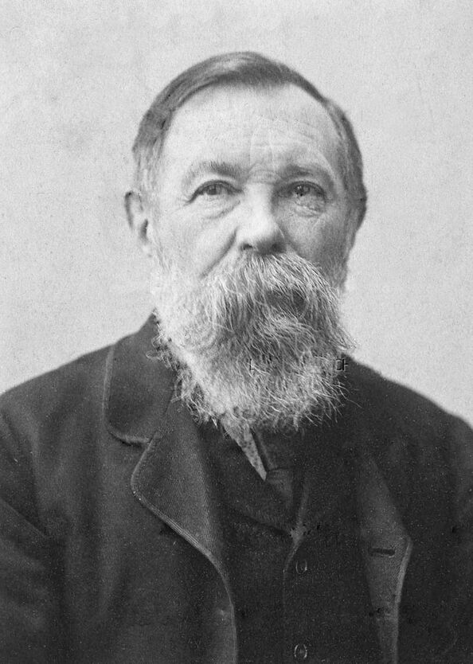
Friedrich Engels (1820 – 1895) — Người giải quyết sâu sắc biện chứng của chân lý
★ TÍNH CHẤT CỦA CHÂN LÝ (TRANG 254)
TÍNH KHÁCH QUAN CỦA CHÂN LÝ
★
★Nội dung chân thực của tri thức không phụ thuộc vào ý muốn chủ quan★
Khái niệm chân lý khách quan: Dùng để chỉ tính độc lập của nội dung tri thức đối với ý thức của con người và loài người.
Không phụ thuộc vào số đông: Một nhận thức dù được hàng triệu người tin theo nhưng sai trái với quy luật khách quan thì vẫn là sai lầm; ngược lại, chân lý dù ban đầu chỉ một người phát hiện ra (Galileo, Einstein) thì vẫn là chân lý.
Không phụ thuộc vào quyền lực hay lợi ích giai cấp: Chân lý khoa học không phục vụ thói ngụy biện của giai cấp thống trị bóc lột.
LÊNIN: “THỪA NHẬN CHÂN LÝ KHÁCH QUAN LÀ ĐIỀU KIỆN ĐẦU TIÊN ĐỂ PHÂN BIỆT CHỦ NGHĨA DUY VẬT VỚI CHỦ NGHĨA DUY TÂM”
CÂU NÓI BẤT HỦ CỦA GALILEO:
“DÙ SAO THÌ TRÁI ĐẤT VẪN QUAY!” (Eppur si muove!)
Quyền lực tòa án dị giáo có thể giam cầm thể xác nhà bác học, nhưng không thể bóp chết chân lý khách quan của vũ trụ.
★ TÍNH CHẤT CỦA CHÂN LÝ (TRANG 254 – 255)
TÍNH TUYỆT ĐỐI VÀ TÍNH TƯƠNG ĐỐI CỦA CHÂN LÝ
★
★Mối quan hệ biện chứng giữa chân lý bộ phận và chân lý hoàn toàn★
✦ CHÂN LÝ TƯƠNG ĐỐI
Là tri thức phản ánh đúng đắn nhưng chưa hoàn toàn đầy đủ hiện thực khách quan; mới phản ánh đúng một mặt, một bộ phận trong những điều kiện lịch sử nhất định.
Ví dụ: Định luật vạn vật hấp dẫn của Newton phản ánh chính xác trong cơ học cổ điển ở vận tốc thông thường.
✦ CHÂN LÝ TUYỆT ĐỐI
Là tri thức phản ánh hoàn toàn đầy đủ, toàn diện hiện thực khách quan. Chân lý tuyệt đối là tổng số vô tận của các chân lý tương đối trong quá trình nhận thức.
Ví dụ: Các chân lý bất biến như: “Mọi sự vật đều vận động”, “Con người không thể sống thiếu nước và oxy”.
★ TÍNH CHẤT CỦA CHÂN LÝ (TRANG 255 – 256)
TÍNH CỤ THỂ CỦA CHÂN LÝ
★
★“Không có chân lý trừu tượng, chân lý luôn luôn là cụ thể” — V.I. Lênin★
GẮN LIỀN VỚI ĐIỀU KIỆN LỊCH SỬ – KHÔNG GIAN – THỜI GIAN
Không có chân lý chung chung trừu tượng: Mọi tri thức chỉ được coi là chân lý khi xem xét trong một giới hạn, phạm vi và điều kiện lịch sử xác định.
Vượt quá giới hạn sẽ biến thành sai lầm: Một mệnh đề đúng đắn nếu đem áp dụng ra ngoài không gian, thời gian và điều kiện của nó thì sẽ lập tức trở thành ngụy biện, tai hại.
Cơ sở của tính sáng tạo: Đòi hỏi người hành động phải phân tích tình hình cụ thể của từng địa phương, từng thời điểm chứ không được rập khuôn máy móc.
LÊNIN: “BẤT KỲ CHÂN LÝ NÀO NẾU BỊ ĐẨY ĐI QUÁ GIỚI HẠN CỦA NÓ... ĐỀU CÓ THỂ BIẾN THÀNH MỘT SỰ VÔ LÝ”
MINH HỌA VẬT LÝ KHOA HỌC:
Mệnh đề:“Nước sôi ở 100°C”
- Đúng ở mực nước biển (áp suất 1 atm).
- Sai trên đỉnh Everest (áp suất thấp, nước sôi ở ~71°C).
- Sai trong nồi áp suất (áp suất cao, nước sôi ở ~120°C).
➔ Chân lý luôn bị ràng buộc bởi điều kiện cụ thể!
★ NGUYÊN TẮC PHƯƠNG PHÁP LUẬN
QUAN ĐIỂM LỊCH SỬ – CỤ THỂ TRONG NHẬN THỨC
★
★Nguyên tắc xem xét sự vật trong bối cảnh không gian và thời gian xác định★
BA NGUYÊN TẮC QUÁN TRIỆT QUAN ĐIỂM LỊCH SỬ – CỤ THỂ
Xem xét trong không gian, thời gian cụ thể: Mỗi sự vật sinh ra, phát triển và tiêu vong trong một hoàn cảnh lịch sử nhất định; phải tìm hiểu nguồn gốc và điều kiện đó.
Tránh sao chép, áp dụng rập khuôn: Bài học kinh nghiệm của người khác hay của thời kỳ trước chỉ có giá trị tham khảo, không được bê nguyên xi vào điều kiện mới.
Có giải pháp linh hoạt, phù hợp: Phải căn cứ vào thực lực, nguồn lực và mâu thuẫn hiện tại để hoạch định bước đi thích hợp cho từng giai đoạn.
LÊNIN: “BẢN CHẤT CỦA PHÉP BIỆN CHỨNG LÀ PHÂN TÍCH CỤ THỂ MỘT TÌNH HÌNH CỤ THỂ”
BÀI HỌC VẬN DỤNG CỦA VIỆT NAM:
Đảng Cộng sản Việt Nam luôn kiên định chủ nghĩa Mác – Lênin, tư tưởng Hồ Chí Minh, đồng thời vận dụng sáng tạo, phát triển phù hợp với thực tiễn lịch sử cụ thể của Việt Nam qua từng thời kỳ cách mạng.
Đó chính là cội nguồn của mọi thắng lợi trong công cuộc Đổi mới và hội nhập quốc tế!
★ PHẦN V: VẬN DỤNG THỰC TIỄN & KỶ NGUYÊN SỐ
LIÊN HỆ THỰC TIỄN HỌC TẬP CỦA SINH VIÊN
★
★Học lý thuyết → Tư duy phản biện → Thực hành thí nghiệm / Đồ án★
BỐN BƯỚC HỌC TẬP BIỆN CHỨNG CỦA NGƯỜI HỌC HIỆN ĐẠI
Bước 1 (Trực quan sinh động): Đọc giáo trình, nghe giảng, quan sát mô hình mẫu, tích lũy dữ liệu thô.
Bước 2 (Tư duy trừu tượng): Đặt câu hỏi tại sao, phân tích bản chất, lập sơ đồ khái niệm, giải bài tập mô hình.
Bước 3 (Kiểm nghiệm thực tiễn): Bắt tay vào viết code, làm thí nghiệm lab, làm đồ án môn học, đi thực tập doanh nghiệp.
Bước 4 (Tổng kết & Hoàn thiện): Thấy code lỗi thì sửa, thấy giả thuyết sai thì điều chỉnh, nâng tầm nhận thức lên nấc cao mới.
THỰC HÀNH LÀ CON ĐƯỜNG NGẮN NHẤT VÀ DUY NHẤT ĐỂ BIẾN KIẾN THỨC SÁCH VỞ THÀNH BẢN LĨNH CHUYÊN MÔN
Sinh viên thực hành nghiên cứu — Thực tiễn kiểm nghiệm và tôi luyện tri thức
★ TRIẾT HỌC TRONG THẾ KỶ 21
THÁI ĐỘ BIỆN CHỨNG TRƯỚC LÀN SÓNG AI
★
★AI là công cụ nối dài nhận thức • Thực tiễn là thước đo kiểm chứng★
✔ AI LÀ CÔNG CỤ THỰC TIỄN NỐI DÀI TRÍ TUỆ
Như kính thiên văn mở rộng thị giác nhìn vào vũ trụ, AI mở rộng năng lực xử lý dữ liệu khổng lồ của não bộ con người.
Hỗ trợ gợi ý ý tưởng, tổng hợp tài liệu, tự động hóa tác vụ lặp lại để con người tập trung vào tư duy sáng tạo bậc cao.
Thúc đẩy rút ngắn chu trình từ ý tưởng khoa học ra thử nghiệm thực tế.
⚠ NGUY CƠ ẢO GIÁC (HALLUCINATION) & GIÁO ĐIỀU SỐ
AI không có ý thức xã hội: AI chỉ dự đoán xác suất thống kê từ ngữ, không hiểu bản chất hiện thực khách quan.
Không tin tưởng mù quáng: Câu trả lời của AI có thể sai lệch nghiêm trọng; không được lấy AI làm tiêu chuẩn chân lý.
Mệnh lệnh kiểm chứng: Sinh viên phải luôn đối chiếu giáo trình gốc, chạy thử nghiệm mã nguồn và lập luận phản biện độc lập.
★ TỔNG KẾT PHƯƠNG PHÁP LUẬN HÀNH ĐỘNG
BA PHƯƠNG CHÂM HÀNH ĐỘNG VÀNG KIM
★
★Học đi đôi với hành • Lý luận gắn liền thực tiễn • Đổi mới không ngừng★
📚 ➔ 🛠
HỌC ĐI ĐÔI VỚI HÀNH
Biến tri thức thành hành động. Chủ động tham gia nghiên cứu khoa học, viết bài báo, tham gia dự án cộng đồng và rèn luyện kỹ năng nghề nghiệp ngay khi còn ngồi trên ghế giảng đường.
🧠 ➔ 🔍
TƯ DUY PHẢN BIỆN SÁNG TẠO
Không cả tin, không giáo điều trước thông tin mạng hay câu trả lời của AI. Luôn phân tích logic, truy tìm nguồn tài liệu xác thực và lấy thực nghiệm khách quan làm thước đo.
🌀 ➔ 🚀
HỌC TẬP SUỐT ĐỜI
Nhận thức chân lý là đường xoắn ốc vô tận. Không bao giờ tự thỏa mãn với lượng kiến thức hiện tại; liên tục cập nhật công nghệ và tri thức mới để không bị đào thải.
★ PHẦN VI: TỔNG KẾT HỆ THỐNG
SƠ ĐỒ TỔNG THỂ LÝ LUẬN NHẬN THỨC MÁC – LÊNIN
★
★Toàn cảnh kiến thức: Khách thể ⇄ Chủ thể ⇄ Cảm tính ⇄ Lý tính ⇄ Thực tiễn ⇄ Chân lý★
1BẢN CHẤT
Phản ánh tích cực, sáng tạo
Khách thể ⇄ Chủ thể
3 Nguyên tắc V.I. Lênin
Kinh nghiệm vs. Lý luận
2THỰC TIỄN
Hoạt động vật chất cảm tính
3 Hình thức: Sản xuất, Chính trị, Thực nghiệm
4 Vai trò: Cơ sở, Động lực, Mục đích, Tiêu chuẩn chân lý
3CON ĐƯỜNG
Cảm tính: Cảm giác, Tri giác, Biểu tượng
Lý tính: Khái niệm, Phán đoán, Suy lý
Vòng xoắn ốc vô tận
4CHÂN LÝ
Phù hợp hiện thực khách quan
Tính khách quan
Tính tương đối & tuyệt đối
Tính cụ thể
LÝ LUẬN NHẬN THỨC
MÁC – LÊNIN
SỰ THỐNG NHẤT HỮU CƠ: THỰC TIỄN LÀ GỐC ➔ TƯ DUY LÀ ĐÒN BẨY ➔ CHÂN LÝ LÀ ĐÍCH ĐẾN
★ BỘ GIÁO TRÌNH TRIẾT HỌC MÁC – LÊNIN (TRANG 256)
HỆ THỐNG CÂU HỎI ÔN TẬP VÀ THẢO LUẬN
★
★Bám sát đề cương thi kết thúc học phần Triết học Mác – Lênin★
Câu hỏi 1 (Giáo trình Trang 256):
Phân tích bản chất của nhận thức theo quan điểm của chủ nghĩa duy vật biện chứng? Phân biệt nhận thức kinh nghiệm và nhận thức lý luận?
Câu hỏi 2 (Giáo trình Trang 256):
Thực tiễn là gì? Phân tích vai trò của thực tiễn đối với nhận thức và ý nghĩa phương pháp luận của quan điểm thực tiễn?
Câu hỏi 3 (Giáo trình Trang 256):
Phân tích con đường biện chứng của quá trình nhận thức: Từ nhận thức cảm tính đến nhận thức lý tính và sự kiểm nghiệm của thực tiễn?
Câu hỏi 4 (Giáo trình Trang 256):
Chân lý là gì? Trình bày các tính chất của chân lý và ý nghĩa của quan điểm lịch sử - cụ thể trong học tập và công tác?
YÊU CẦU BÀI THI: ĐỦ ĐỊNH NGHĨA KHOA HỌC • PHÂN TÍCH QUY LUẬT BIỆN CHỨNG • NÊU VÍ DỤ THỰC TIỄN SINH ĐỘNG
★ THỬ THÁCH TƯ DUY BIỆN CHỨNG CUỐI GIỜ
TRÒ CHƠI: “GIẢI MÃ HÀNH TRÌNH NHẬN THỨC”
★
★5 Câu hỏi tình huống tổng hợp • Tranh danh hiệu Nhà Biện Chứng Xuất Sắc★
🏆
THỬ THÁCH TỔNG HỢP KIẾN THỨC VÀ TÌNH HUỐNG THỰC TẾ
Trò chơi gồm 5 câu hỏi trắc nghiệm tình huống bao quát từ nhận thức cảm tính, quy nạp - diễn dịch, vai trò của thực tiễn, tính cụ thể của chân lý đến việc ứng dụng AI.
★ ĐIỂM TỐI ĐA: 100 ĐIỂM • GIẢI THÍCH CHI TIẾT SAU MỖI CÂU ★
★ MINI-GAME 2 • ĐÁNH GIÁ CHUẨN ĐẦU RA
GIẢI MÃ HÀNH TRÌNH NHẬN THỨC
★
✦ CÂU HỎI:Câu 1 / 5
★ TỔNG ĐIỂM:Điểm: 0 / 100
Đang tải câu hỏi thử thách...
★ THÔNG ĐIỆP KẾT THÚC BÀI GIẢNG
THÔNG ĐIỆP TRIẾT HỌC
★
★Kim chỉ nam cho tư duy khoa học và hành động thực tiễn★
“Thực tiễn không có lý luận hướng dẫn là thực tiễn mù quáng;
Lý luận không liên hệ với thực tiễn là lý luận suông.”
— Khẩu hiệu phương pháp luận của Chủ nghĩa Mác – Lênin
Mỗi người trẻ hãy bước vào đời với trái tim nhiệt huyết, khối óc tư duy biện chứng sắc bén, luôn lấy thực tiễn phục vụ nhân dân và đất nước làm thước đo cao nhất cho mọi giá trị của tri thức!
★ BỘ GIÁO TRÌNH TRIẾT HỌC MÁC – LÊNIN • CHƯƠNG 2
XIN TRÂN TRỌNG CẢM ƠN!
★
★Thầy Cô và các bạn sinh viên đã chú ý lắng nghe & thảo luận★
PHẦN THẢO LUẬN & GIẢI ĐÁP THẮC MẮC
Chủ đề: Lý luận nhận thức duy vật biện chứng
Tài liệu tham khảo chính thức: Bộ Giáo trình Triết học Mác – Lênin, NXB Chính trị quốc gia Sự thật, Chương 2, Phần III (Trang 231 – 256).
Hỗ trợ kỹ thuật: Bấm phím N để mở Ghi chú thuyết trình, phím M để mở Mục lục slide, phím F để bật Toàn màn hình.
KÍNH CHÚC THẦY CÔ VÀ CÁC BẠN SINH VIÊN SỨC KHỎE VÀ THÀNH CÔNG TRONG HỌC TẬP!